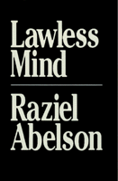

<body bgcolor="#FFFFFF" text="#000000" link="#0000FF" vlink="#CC0000" alink="#CC0000"><center><hr width="350" size="1" align="center" noshade>Reconceptualizing the human mind in a mechanical society<hr width="350" size="1" align="center" noshade><p><a href="https://cdcshoppingcart.uchicago.edu/Cart/ChicagoBook.aspx?ISBN=9780877225799&&PRESS=temple" target="_top">Buy this book!</a> | <a href="https://cdcshoppingcart.uchicago.edu/Cart/Cart.aspx?PRESS=temple" target="_top">View Cart</a> | <a href="https://cdcshoppingcart.uchicago.edu/Cart/Cart.aspx?PRESS=temple" target="_top">Check Out</a></p><p></p></center><!--none//--><h1>Lawless Mind</h1>
<h3>Raziel Abelson</h3>
<P>cloth 0-87722-579-6 $41.50, Oct 88, <FONT COLOR=#990033>Out of Stock Unavailable</FONT>
<BR> 209 pp
5x8
</P><BLOCKQUOTE><I>"</I>Lawless Mind<I> is an important contribution to the philosophy of mind. It will attract much attention, create a lot of controversy, and be judged a fine piece of work by an author who writes with clarity, wit, insight, and a distinctive turn of mind."</I>
<BR>&#151<B>Gerald E. Myers</B>, CUNY<I></I></BLOCKQUOTE>
<P>While the ancients described the world as a single organism and the medieval view was theological in nature, modern thought has envisioned the world as a mechanism composed of smaller mechanisms. Raziel Abelson argues that this mechanistic explanation, when applied to human action, is dangerous because it "threatens us with a kind of spiritual annihilation&#133[and] it undermines our belief in freedom of the will and with it the reality of choice, value, and moral responsibility." In <I>Lawless Mind</I>, he presents a theory about the relationship between mind and body in order to show how voluntary actions can be causally explained while still allowing for free will.
<P>Abelson attempts to reconcile the centuries-old debate between determinists and free-willers by making a distinction between two kinds of causality. "The impact of this [mechanistic] view on psychology, ethics, and politics is such as to replace moral judgment with the search for causal mechanisms. In psychology it results in reducing moral wisdom to medical therapy, in politics it reduces statesmanship to game theory and rational persuasion to behavioral modification, and in ethics it reduces moral responsibility to social conformity. If we are all programmed automata, as mechanism suggests, then the way to improve our performances is to hire a mechanic of the mind to tinker with our wiring. Is this the way to think about ourselves? I shall try to show that it is not."
<P>Abelson's novel theory of mind and psychological causality provides solutions for problems in metaphysics, ethics, psychology, and the social sciences. The issues addressed include free will and responsibility, mind-body interaction, models of psychotherapy, causal explanations in sociology, and the difference between minds and computers.
<BR>&nbsp;<h2>Excerpt</h2><P>Excerpt available at <a href="http://www.temple.edu/tempress">www.temple.edu/tempress</a></p>
<BR>&nbsp;<h2>Contents</h2><P>
<P>Preface
<BR>1. Two Concepts of Cause
<BR>2. Agency and Responsibility
<BR>3. Where the Buck Stops and Why
<BR>4. Extra Credit and Discredit
<BR>5. Healing Sick Souls
<BR>6. The Myth of Mental Science
<BR>7. Youth and Other Excuses
<BR>8. Wittgenstein's Challenge
<BR>9. The Challenge of Artificial Intelligence
<BR>10. Keeping Mind and Body Together
<BR>Notes
<BR>Bibliography
<BR>Index
</P><BR>&nbsp;<H2>About the Author(s)</H2>
<P><B>Raziel Abelson</B> is Professor of Philosophy at New York University and author of <I>Persons: A Study of Philosophical Psychology</I>.</P>
<BR><H2>Subject Categories</H2>
<p><A HREF="/tempress/philosophy.html" TARGET="_top">Philosophy and Ethics</a>
</p>
<p align="center"><a href="https://cdcshoppingcart.uchicago.edu/Cart/ChicagoBook.aspx?ISBN=9780877225799&&PRESS=temple" target="_top">Buy this book!</a> | <a href="https://cdcshoppingcart.uchicago.edu/Cart/Cart.aspx?PRESS=temple" target="_top">View Cart</a> | <a href="https://cdcshoppingcart.uchicago.edu/Cart/Cart.aspx?PRESS=temple" target="_top">Check Out</a></p><p><font face="Arial" size="1"><a href="copyright.html" onMouseOver="window.status='Web Copyright Policy';return true;" onMouseOut="window.status=''" title="Web Copyright Policy">&copy;</a> 2015 <a href="http://www.temple.edu" target="new" onMouseOver="window.status='Link to Temple University home page';return true;" onMouseOut="window.status=''" title="Link to Temple University home page">Temple University</a>. All Rights Reserved. http://www.temple.edu/tempress/titles/528_reg.html</font></p>